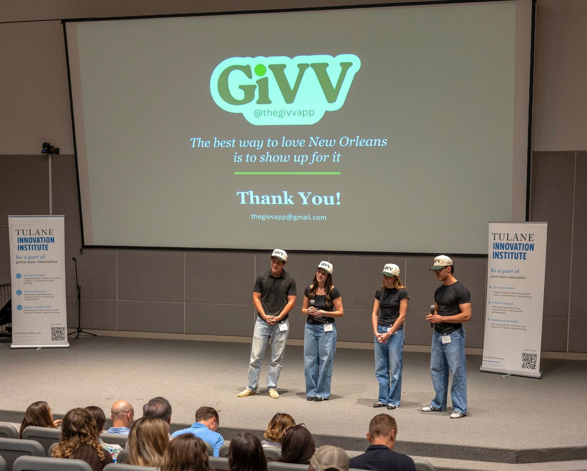

02 / GiVV · Co-founder & COO
From student research to a $15K pitch win.
Our team developed a social marketplace concept that connects Tulane students with New Orleans nonprofits.

The idea
Lower the barriers to local giving.
GiVV is a social marketplace concept connecting Tulane students with local nonprofits through micro-donations, social sharing, and student-organization competitions.
In 15+ interviews, students pointed to limited funds, questions of trust, and decision fatigue. Personal connection and seeing friends participate made a difference. Those findings shaped our approach.
My contribution
Building the work behind the pitch.
As co-founder and COO, I led operations throughout our semester-long startup incubator, contributed to strategy and user research, and developed the social media strategy and content. My teammates and I built and presented the concept together.
On April 28, 2026, GiVV placed first in Tulane’s Startup Strategy Lab final pitch competition and won $15,000 in startup funding. It was a proof point for the idea—and for what a committed team can do in one semester.